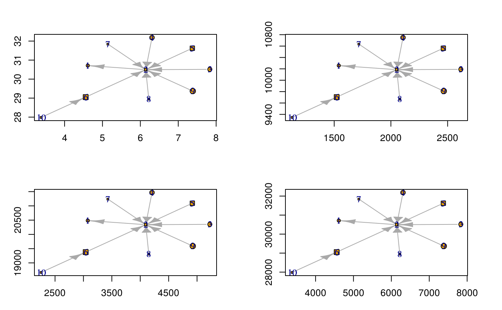

This function rescales a vertex size before passing it to
plot.igraph so that the resulting vertices
have the desired size relative to the x-axis.
rescale_vertex_igraph( vertex.size, par.usr = par("usr"), minmax.relative.size = getOption("diffnet.minmax.relative.size", c(0.01, 0.04)), adjust = 200 ) igraph_vertex_rescale( vertex.size, par.usr = par("usr"), minmax.relative.size = getOption("diffnet.minmax.relative.size", c(0.01, 0.04)), adjust = 200 ) vertex_rescale_igraph( vertex.size, par.usr = par("usr"), minmax.relative.size = getOption("diffnet.minmax.relative.size", c(0.01, 0.04)), adjust = 200 )
| vertex.size | Numeric vector of unscaled vertices' sizes. This is unit-free. |
|---|---|
| par.usr | Integer vector of length 4 with the coordinates of plotting region.
by default uses |
| minmax.relative.size | A numeric vector of length 2. Represents the desired min and max vertex sizes relative to the x-axis in terms of percentage (see details). |
| adjust | Numeric scalar. Adjustment made to the resulting adjusted size (see details). |
An integer vector of the same length as vertex.size with
rescaled values.
minmax.relative.size limits the minimum and maximum size that a vertex
can take in the plot relative to the x-axis scale. The values for the x-axis
scale are by default retrieved by accessing to par("usr"). By default
the vertex are rescaled to be at least 1% of the size of the plotting region
and no more than 5% of the plotting region, minmax.relative.size=c(.01, .05).
The default value for adjust is taken from igraph
version 1.0.1. In particular, the function igraph:::.igraph.shape.circle.plot,
in which before passing the vertex.size to the function
symbols, the vertex size is reduced by 200.
The rescaling is as follows: $$% v' = \frac{v - \underbar v}{\bar v - \underbar v}\times (\bar s - \underbar s) + \underbar s $$
Where \(v\) is the vertex size, \(\bar v\) and \(\underbar v\) are
the max and min values of \(v\) respectively, and \(\bar s\) and
\(\underbar s\) are the max and min size that vertices take in terms
of minmax.relative.size and par.usr. The adjusted value \(v'\)
is then multiplied by adjust.
igraph_vertex_rescale and vertex_rescale_igraph are aliases.
Other visualizations:
dgr(),
diffusionMap(),
drawColorKey(),
grid_distribution(),
hazard_rate(),
plot_adopters(),
plot_diffnet2(),
plot_diffnet(),
plot_infectsuscep(),
plot_threshold()
library(igraph)#> #>#> #> #>#> #> #> #>#> #> #> #> #> #>#> #> #>#> #> #># Random graph and coordinates set.seed(2134) g <- barabasi.game(10) coords <- layout_nicely(g) # Random size and figures size <- runif(10) size <- cbind(size, size) shap <- sample(c("circle", "square"),10,TRUE) # Plotting oldpar <- par(no.readonly = TRUE) par(mfrow=c(2,2), mai=rep(.5,4)) for (i in seq(1, 1000, length.out = 4)) { # New plot-window plot.new() plot.window(xlim=range(coords[,1]*i), ylim=range(coords[,2]*i)) # plotting graph plot(g, layout=coords*i, add=TRUE, rescale=FALSE, vertex.shape = shap, vertex.size = rescale_vertex_igraph(size) # HERE WE RESCALE! ) # Adding some axis axis(1, lwd=0, lwd.ticks = 1) axis(2, lwd=0, lwd.ticks = 1) box() }par(oldpar)